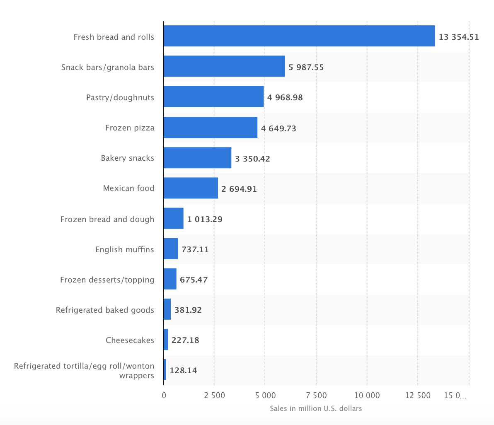

I am focusing on making a baking app according to the ingredients available in one's locality. The app will also include recipes, tips, guidelines for baking. According to my research, people of young generations are more into sweets/pastries than the old generations. I say this because young generations don't have much health issues like diabetes which the old generation may have or need to be careful about. Therefore, my target audience would be youth that includes children, school as well as college going students.
I also researched on which bakery item is on the higher demand and which is on the lower demand. I did this to get a general idea about what bakery dishes are popular and what ingredients are needed to make them. As per my research, one can see in the graph below statistics featuring the dollar sales of bakery products in the USA, 2017. Bread and rolls are on top, following are pastries, bakery snacks, frozen bread and dough, english muffins etc. After analyzing the graph, I have a distinct idea on which items (breads and pastries) are on higher demand indicating the fact that the app should not only have these goods in priority but should also have information on what ingredients are needed to make them, and where can one find it.

Since this app is my first app I want it to focus on small scale audience as I want to experiment first before opening to a big audience. For this I researched on which state in USA does not have good bakeries or isn't in the top rank of the country. My survey explains that California is a state which doesn't have any topped ranked bakeries of the nation. In fact, Columbus in Ohio has the best bakeries in the states. This gives me my target audience that is Davis in California as Davis has so many college students (youth) and California lacks top bakeries which decreases the rate of competition my app can have.
When I initially chose youth as my audience, I thought that youth nowadays is very diet conscious and that can decrease the number of people who will use my app. When I researched more I found out that even though young people are more diet conscious they have cheat days where they let them selfs eat lot of sweet things; there are lots of occasions that require a dessert as a part of the occasion such as valentine's days, Easter day, thanksgiving etc.; besides there are some passionate bakers too in college who love to bake but cannot find the ingredients.
"America's Favorite Cities for Baked Good." Travel And Leisure.
travelandleisure.com/food-drink/americas-favorite-cities-baked-goods#richmond-sub-rosa
"Us Unit Sales Of Bakery Products By Category." Statista. www.statista.com/statistics/457113/us-unit-sales-of-bakery-products-by-category
"What Are the Busiest Times for the Bakery Business?" Small Business. smallbusiness.chron.com/busiest-times-bakery-business-77397.html